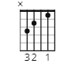
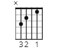

Am
C
E7
F
G
 



Capo på 1. fret for ofisiell video
Ingen capo for orginal studioversjon
Jeff Buckley var en amerikansk musiker og låtskriver, født 17. november 1966 i Anaheim, California. Han er best kjent for sitt album "Grace" fra 1994, som inkluderer sanger som "Hallelujah" og "Last Goodbye".
Buckley hadde en unik stemme og en bemerkelsesverdig gitarteknikk, og hans musikk kombinerte elementer fra flere sjangre. Dessverre døde han i en drukningsulykke i 1997, men hans musikalske arv lever videre som en betydelig innflytelse på moderne musikere.